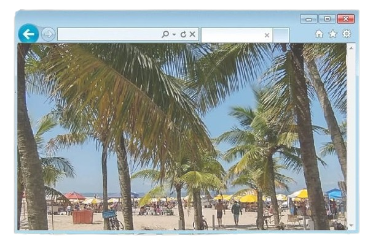
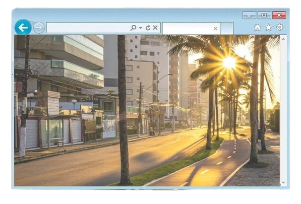

População: ~330 mil habitantes Localização: litoral de São Paulo
(Baixada Santista) Bioma: Mata Atlântica Fundação: município criado
em 1967 Aniversário: 19 de janeiro Característica: estância
balneária e urbana

A história de Praia Grande começa muito antes da colonização
portuguesa, quando a região era habitada por povos indígenas que
viviam da pesca, da caça e da coleta.
Esses grupos utilizavam os recursos naturais de forma sustentável,
aproveitando a abundância do litoral.
Com a chegada dos
portugueses, a área passou a integrar o processo de ocupação do
litoral paulista, ficando por muito tempo vinculada à cidade de São
Vicente, um dos primeiros núcleos coloniais do Brasil.
Durante séculos, Praia Grande manteve características rurais e pouco
desenvolvimento urbano, sendo composta principalmente por pequenas
comunidades.
Foi apenas no século XX que a região começou a
crescer de forma mais significativa, impulsionada pelo turismo.
A melhoria das estradas e o acesso mais fácil a partir da capital São
Paulo atraíram visitantes em busca de lazer, especialmente nas décadas
de 1950 e 1960.
Em 1967, Praia Grande conquistou sua emancipação
político-administrativa, tornando-se um município independente.
Desde então, a cidade passou por rápida urbanização e se consolidou
como um dos principais destinos turísticos do litoral paulista.

Economia baseada no turismo, comércio e serviços Uma das cidades
mais visitadas do litoral paulista Grande quantidade de apartamentos
de veraneio Forte movimento turístico no verão
População urbana grande e em crescimento Forte influência da
migração e urbanização Economia sazonal afeta empregos Grande
aumento populacional na alta temporada
Extensa faixa de praias contínuas Presença de áreas urbanizadas e
algumas áreas naturais Manguezais e regiões costeiras Relevo
predominantemente plano
Orla urbanizada com ciclovia e quiosques Fortaleza de Itaipu
Portinho Praias como Guilhermina, Boqueirão e Aviação